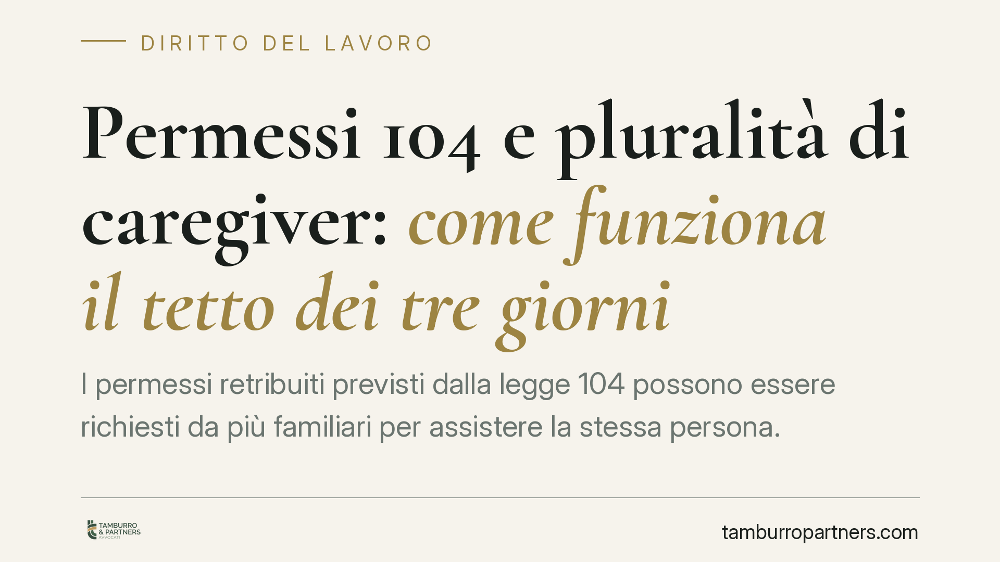

Permessi 104 e pluralità di caregiver: come funziona il tetto dei tre giorni
I permessi retribuiti previsti dalla legge 104 possono essere richiesti da più familiari per assistere la stessa persona. Dopo la riforma del 2022 la disciplina è cambiata, ma resta un punto fermo: il limite di tre giorni al mese è riferito alla persona assistita, non al singolo lavoratore. Un dettaglio che incide su richieste, indennità ed eventuali recuperi.

Il contesto
La legge 5 febbraio 1992, n. 104 riconosce ai lavoratori dipendenti che assistono un familiare con disabilità grave tre giorni di permesso retribuito al mese. Un tema ricorrente riguarda i casi in cui più familiari intendano assistere la stessa persona.
Su questo punto è intervenuto il D.Lgs. 30 giugno 2022, n. 105, che ha modificato l'art. 33 della legge 104/1992. Prima della riforma vigeva il principio del cosiddetto "referente unico": salvo eccezioni, i permessi mensili potevano essere richiesti da un solo lavoratore per la stessa persona assistita.
Inquadramento normativo
Il D.Lgs. 105/2022 ha inciso sull'art. 33, comma 3, della legge 104/1992. La modifica ha superato la rigidità del referente unico, consentendo che più aventi diritto possano fruire dei permessi per assistere lo stesso soggetto con disabilità grave.
Resta però invariato il tetto complessivo: i tre giorni mensili sono riferiti alla persona assistita e non a ciascun lavoratore. In presenza di più caregiver, quei tre giorni vanno quindi ripartiti fra loro, non moltiplicati. Se due familiari assistono lo stesso soggetto, la somma delle giornate da loro fruite non può superare il limite mensile complessivo previsto per quella persona.
È opportuno verificare sempre il testo vigente dell'art. 33 e le indicazioni operative aggiornate dell'INPS, che regolano modalità di domanda e ripartizione delle giornate. La disciplina di prassi è soggetta ad aggiornamenti: eventuali istruzioni specifiche vanno riscontrate sui documenti ufficiali dell'Istituto al momento della richiesta.
Implicazioni pratiche
Il passaggio dal referente unico alla pluralità di caregiver amplia le possibilità organizzative delle famiglie, ma introduce un onere di coordinamento.
Per il lavoratore. Chi condivide l'assistenza con altri familiari deve tenere conto delle giornate già fruite dagli altri aventi diritto per la stessa persona. Il rischio concreto è il superamento involontario del tetto mensile, con conseguente esposizione a richieste di recupero dell'indennità corrisposta per le giornate eccedenti.
Per il datore di lavoro. L'azienda gestisce le richieste dei propri dipendenti, ma non ha visibilità sulle giornate fruite presso altri datori da altri familiari. Ciò rende più delicata la fase di verifica, che in concreto è demandata all'INPS quale ente erogatore dell'indennità.
È importante un chiarimento di merito: un eventuale recupero delle somme non presuppone necessariamente un comportamento scorretto. Nella maggior parte dei casi il superamento del tetto deriva dalla mancata condivisione delle informazioni fra i diversi caregiver, ciascuno inconsapevole delle giornate già utilizzate dagli altri. La conseguenza economica resta comunque a carico di chi ha fruito delle giornate eccedenti.
Cosa fare in concreto
- Mappare gli aventi diritto. Individuare tutti i familiari che intendono fruire dei permessi per la stessa persona assistita, prima di presentare le domande.
- Programmare la ripartizione. Distribuire le giornate mensili in modo che la somma complessiva non superi il tetto riferito alla persona assistita.
- Documentare le giornate fruite. Conservare traccia delle date effettivamente utilizzate da ciascun caregiver, così da avere un quadro aggiornato e ridurre il rischio di sovrapposizioni non volute.
- Consultare le istruzioni INPS vigenti. Verificare sul sito dell'Istituto le modalità di domanda e di comunicazione della pluralità di aventi diritto in vigore al momento della richiesta.
- Rivolgersi a un professionista in caso di richiesta di recupero. Se l'INPS notifica una richiesta di restituzione, è utile analizzare il conteggio delle giornate e la correttezza del calcolo prima di procedere.
In sintesi
La riforma del 2022 ha reso più flessibile la gestione dei permessi 104 tra più familiari, ma non ha ampliato il monte giorni disponibile per la persona assistita. Il tetto dei tre giorni resta il riferimento centrale: comprenderlo e coordinarsi tra caregiver è il modo più efficace per evitare superamenti e successive richieste di recupero.
Contributo informativo a cura di Tamburro & Partners - Avv. Giuseppe Tamburro. Non costituisce parere legale.
Ogni storia di lavoro ha i suoi tempi.
Se gestisci HR e vuoi un confronto su contenzioso, ispezioni o licenziamenti, scrivi allo studio. Ti rispondiamo entro un giorno lavorativo.